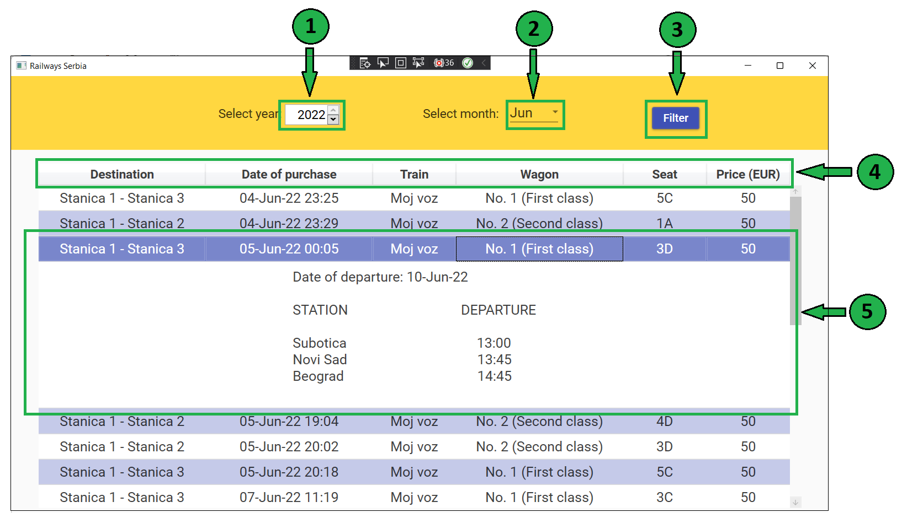

On this page you can see the tickets that were sold during the month you choose. In order to search for tickets, you can first enter your search criteria. Initially, tickets for January of the current year are shown.
In the year entry field, select for which year you want to see the report.
In the month entry field, select for which year you want the report
Click on the Show button to display tickets that meet your search criteria.
After clicking the button, In the table below you can see list of tickets. If you want, you can sort it by several
criteria that are written in the table header
To see details of ticket, such as departure date and stations, you can click on the table row that represents wanted ticket.